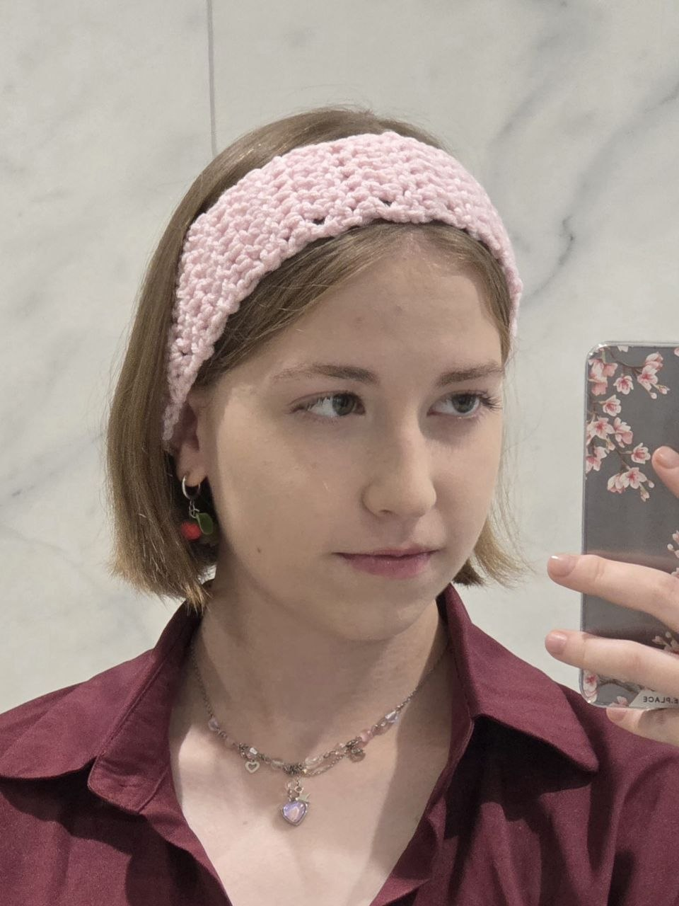

Место учебы
Фундаментальная и прикладная лингвистика, НИУ ВШЭ, Москва
Человек, умеющий создавать HTML

Фундаментальная и прикладная лингвистика, НИУ ВШЭ, Москва
Клин
Лицей №10 (Клин), ЦПМ (Москва)
Мой приход в лингвистику довольно банален: до определённого момента, учась в лицее, я была уверена, что стану математиком. Потом - филологом или переводчиком. А потом случились олимпиады, а потом олимпиады по лингвистике и русскому, и всё сошлось.
Из менее банального: в моём родном городе какое-то время жил и творил П. И. Чайковский, а потому:
а) у нас есть дом-музей П. И. Чайковского, и летом ежегодно на его территории проходит международный музыкальный фестиваль под открытым небом
б) в школе (особенно в начальных классах) к предмету «Музыка» относились серьёзно, и в 10 лет я могла написать «угадайку» по произведениям Петра Ильича (т. е. узнавать отрывки на слух) и, вдобавок, диктант по музыкальным терминам. Возможно, смогу и сейчас, если найду тетрадь за 4 класс.
Ещё немного случайных фактов: умею собирать кубики Рубика разных размеров, пела в школьном хоре, полупрофессионально занималась плаванием на протяжении примерно 8 лет (и вообще спорт очень люблю).